The National Archives of Australia
Responsive Design Website
Project Summary
This case study investigated the usability of the National Archives of Australia (NAA) website. The user perspective taken was from an immigrant to Australia, searching for their arrival date in Australia. User testing was performed and assessed, with issues identified as being navigation, language, readability and colour accessibility. The homepage was redesigned for desktop and mobile, and prototypes created.
Project Overview
The NAA is the home of Australia's documented history of important events. Offering a wide variety of services including: online records searches, workshops, exhibitions and events. The NAA provides the public a place to learn and remember Australia's past.
The intention of this project was to increase visibility of the online records and catalogues offered by NAA. Allowing immigrants to more easily find their immigration date. As well as to heighten awareness of the wealth of knowledge freely searchable for students, researchers and the general public at the NAA.
My Contrabution
- Role:
- My Responsibilities
- Project Type
- Project Duration
- Design Tools
- Deliverables
Design Process Overview
In order to develop a user informed solution to the problem, the Design Thinking methodology was utilised. Developed by Hasso Plattner Institute of Design, this approach addresses complex problems by understanding human needs, with the benefit of accounting for unknown variables.
The diagram below demonstrates the five stages of the Design Thinking Methodology.
By sequentially working through these stages, I was able to develop a user centric solution to the users problem.
The Problem
The NAA is the primary location for people who immigrated to Australia before 1973 to find their immigration date. This information is critical for filling in forms for some Government agencies.
However, the current design doesn't highlight that the records are searchable online and the terminology used is vague.
The Solution
To solve the problem the NAA website needs the navigation bar to use of more direct language and highlight that the records are searchable online. This would provide the user with clear direction on how to find their immigration date in the records search.
Empathise
Understanding another person’s feelings better to gain an understanding of what their needs are. This aids in discovering where the problems lie and establishing the core issues.
Understanding the User and Interface Analysis
My first step to gain an understanding of the user of the NAA website was to create a Proto Persona. This helped me to develop a picture of the demographics for who the perceived user of the NAA website might be, and what problems they might be experiencing in using the website. This was followed by an assessment of the current website. The most likely user flows taken by the user in navigating their way to the immigration section of the website was identified. A heuristics assessment was also conducted to identify potential areas for improvement and WCAG colour accessibility testing performed.
Huristics assessment
The heuristics assessment was conducted by taking screenshots of the potential user flow and redline annotating. Additionally, a heuristics evaluation was conducted rating aspects of the website out of 3. These aspects include: appearance, content, navigation and efficiency. The results of the assessment and a sample image of the homepage are included below.
- Positives
- Negatives
WCAG Testing Fails
Contrast Ratio - 4.17:1
WCAG AA: Fail
WCAG AAA: Fail
Contrast Ratio - 2.5:1
WCAG AA: Fail
WCAG AAA: Fail
Current NAA website
Testing the User Interface
Building on the initial ideas of the potential user and how they might perceive the website, a user research plan for testing the website was created. This plan was then implemented to conduct user testing, and feedback was gained on the interface from the perspective of a real user. Aspects for investigation included: navigation of the website, heuristics, and any pain points the user identified.
User Test Plan
- Objectives:
Methodology:
User testing was conducted to collect qualitative data from 5 participants. The testing was recorded via zoom and notes for further data analysis were taken. Participants were provided with 4 tasks to complete, and assessed for how quickly they could identify the intuitive signaling, move through the user flow, and asked for their opinion on the aesthetics and design of the website.
User Testing Analysis
The process of analysing the test data was performed on Miro. This included establishing common themes in the data, utilising an Affinity Diagram, followed by a frequency diagram to establish the core issues. The results of this analysis produced the following key insights and user statements.
Key Insights
Define
Refining who the user is, narrowing down to define the problem and interpreting the results to create our problem statement.
Defining the User, their Journey and Priority Features
The user testing provided me with a clearer picture of my user and a better understanding of their needs. A User Persona was created to reflect my refined understanding of the user's goals, needs and pain points. To better understand their emotional experience using the website a user journey map was created. This was followed by a user flow chart, to define their path through searching for information on immigration records, and navigating to the search page.
User Persona
Meet Surya, my NAA user and find out who she is, why she visited the NAA website and challenges she faced finding information.
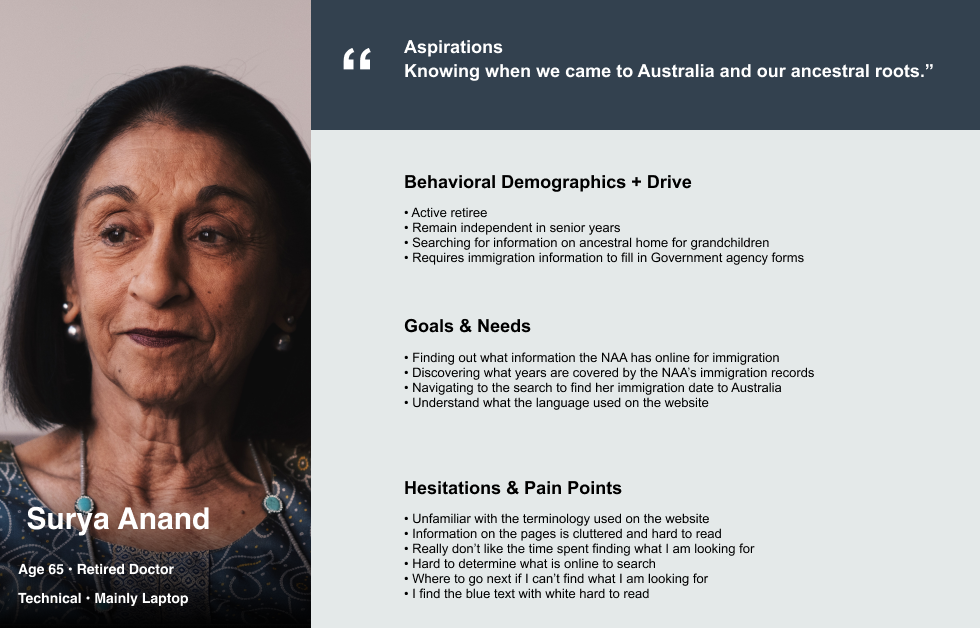User Journey Map
Surya’s experience of moving through the website was then mapped out into a user journey map. This helped to better identify at what points throughout the journey Surya experiences her frustrations, touch points and what leads to success.
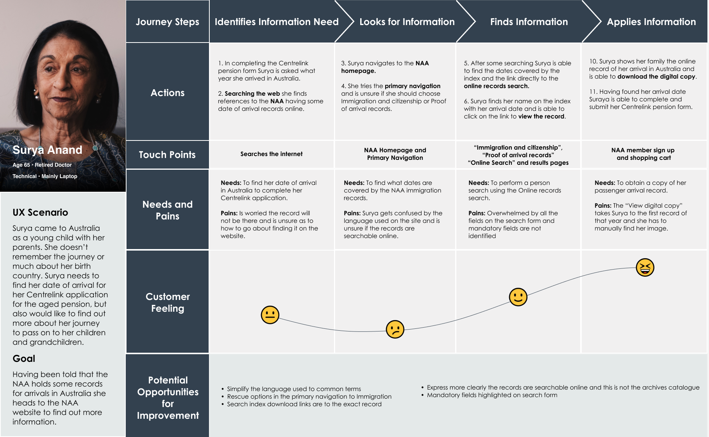Feature Prioritisation
Having established our user and the problem areas of the website, a Feature Prioritisation matrix was created. This was done to establish what areas of the website were most important to NAA and the user. These features became the focus of this redesign.
- Features prioritised:
How Might We?
How might I redesign the NAA website’s navigation to highlight that the records are searchable online, make the information on the site more accessible, and easier to interact with for the user?
Ideate
Utilising creativity and innovation in the brainstorming process, for the development of solutions to a defined problem.
Addressing User Flow, Navigation and Sketching up a solution
My first tasks, having established my priorities, were to address the user flow and information architecture. With the new user flow and information architecture I was then able to create my initial wireframe sketches, commencing the process of solving the users problems.
User Flow Chart
After establishing the existing user journey through the website, and Feature Prioritisation, I set about ideating to create the new user flow. The first flow being, to reduce all the information about immigration to come from one link in the secondary navigation. Secondly, relabelling the call to action to clearly demonstrate the records are searchable online. Below is a simple user flow chart to demonstrate the process.
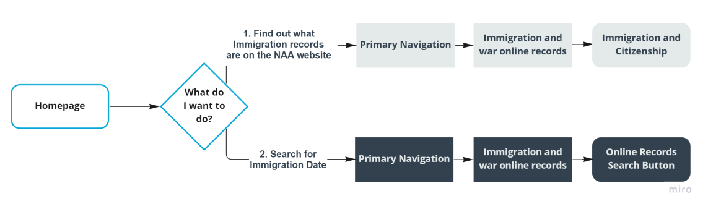Information Archetecture
For the establishment of a new information architecture, card sorting was utilized as the method to establish new groupings, labels and structure. The final results were then further developed into a new sight map for the NAA website. Below demonstrates the original and new primary navigation for the website.
Origninal Primary Navigation
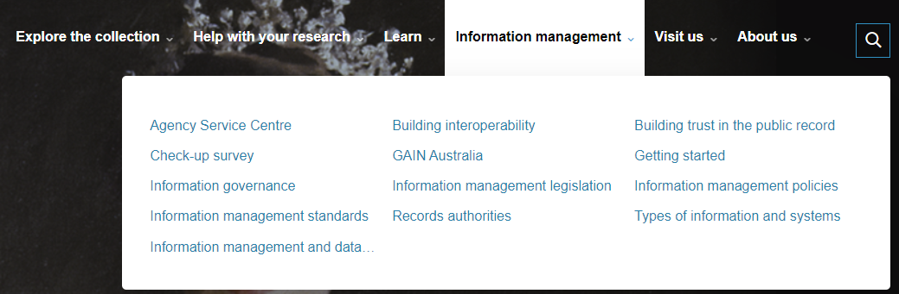New Primary Navigation
Wireframes Ideation
To approach the problem of how I might redesign the navigation bar I created a UI mood board, then incorporated this research into a basic wireframe. One of the major challenges was to find a navigation bar design that allowed for longer secondary navigation labels. The below image demonstrates my initial wireframe.
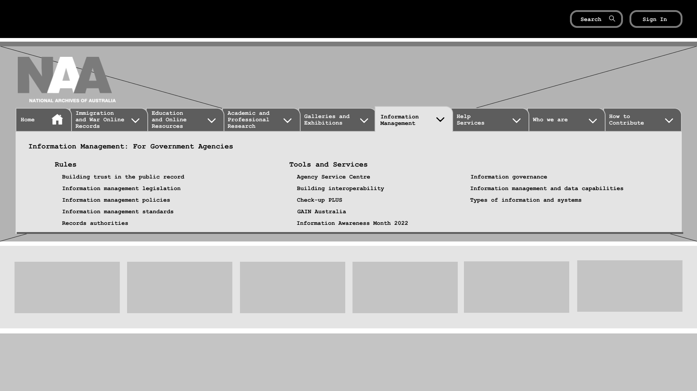Prototype
Bringing ideas to life in an inexpensive scaled down version of the product, to develop a proposed solution to the problem.
Low Fidelity Wireframes and Prototype
Having established a design for the navigation, I further expanded the design to include the whole home page. The carousel was removed and replaced with cards to allow for better visibility of the options and to fill the space evenly. The middle section was changed to a carousel to make it clear to the user the section was 3 separate lines of information. For the events section rather than having every single event on the home page, I sorted them into the type of event they were listed as. This reduced the length of the homepage and narrows down the options so the user doesn’t become overwhelmed by options.
Low Fidelity Wireframe
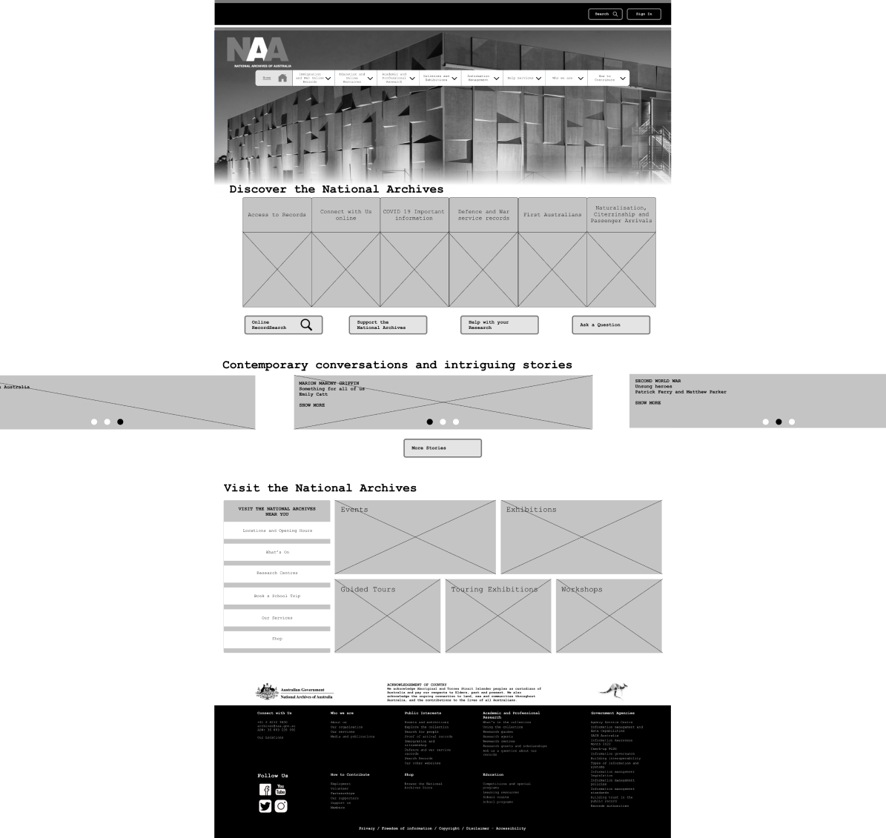Test
Going back to the user to gain insights into if the ideation and prototyping process has solved the users problems. In addition, discovering how we can make further improvements to the prototype from the users perspective.
Did I solve the problem?
Testing my design allowed me to investigate the effectiveness of my ideation phase and solution. Had I made the navigation labels more direct? Is the user flow to the immigration information, and what is searchable online more obvious?
Desktop Five-second usability test
To test the usability of the prototype the Five-second usability test was utilized. The test centered around the issue identified in previous testing regarding, the ability of the user to identify and navigate to the online searchable content of the website.
Objective: The purpose of this testing was to determine if the new primary navigation groupings made it easier for the user to determine where to access the online RecordsSearch of the NAA website.
Results: The user went straight to the primary navigation menu option, “Immigration and War Online Records”, and found the “Online Records Search” button immediately.
Conclusion: The new primary navigation label led the user directly to the online RecordsSearch, therefore no further iteration of the navigation is required.
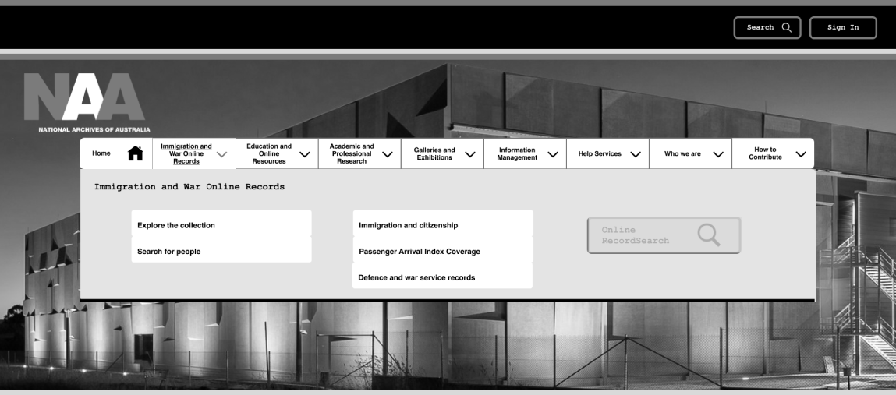Mobile Navigation Testing
During the prototype process, the navigation system for the mobile version needed to be slightly different to the desktop homepage. To verify the functionality of the design user testing was performed.
Objective:
To test the functionality of the header and footer navigation on the mobile homepage.
To test how intuitive it is to identify and navigate to pages from the primary and footer navigation.
Identify pain points the user encounters throughout the navigation process.
Methodology:
User testing was conducted to collect qualitative data from 5 participants using the mobile website on the computer. The testing was recorded via zoom and notes were taken for further data analysis. Participates were provided with 2 tasks to complete. They were asked to assess how intuitive they felt the system was to use, and their ability to identify from the primary navigation where to find specific information in the secondary navigation. The participants were then asked the System Usability Scale questions and answers recorded.
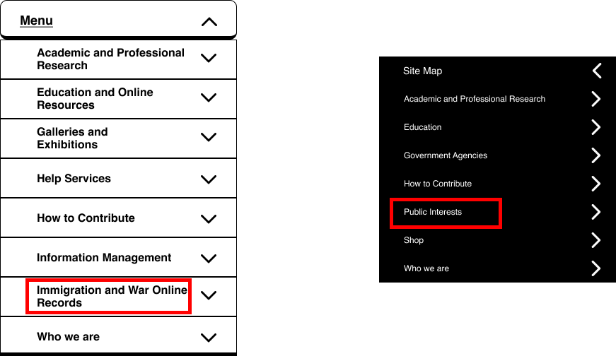Iterate
Ideating on the new insights received in the feedback from the user on the proposed solution, and perfecting the solution by encompassing these changes into the prototype.
Refining the Solution
Even though testing showed there were still some problems with my design, I was confident that I was on the right track with my initial wireframe. To improve the prototype some iterations would be required to refine the experience for the user.
Iterations
To solve the problems I identified in the user testing I made several iterations to the wireframe. As identified in the user testing, moving the word “online” to the second line made more sense and looked better aesthetically.
The footer navigation change was more challenging to solve. After further consultation with the user, the longer but more specific naming proved to be easier to interpret by the user.
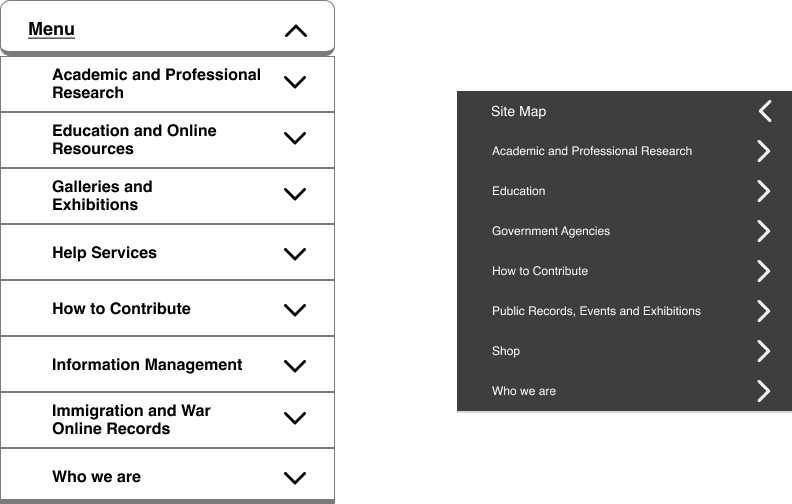Style Guide and High Fidelity Wireframes
With my wireframes finalised a style guide was created and applied to create the high fidelity wireframes and prototype. Below is the style tile with the higher level components of the style guide. Rebranding was not part of this redesign. However, a slight change was made to the primary blue to pass WCAG accessibility. 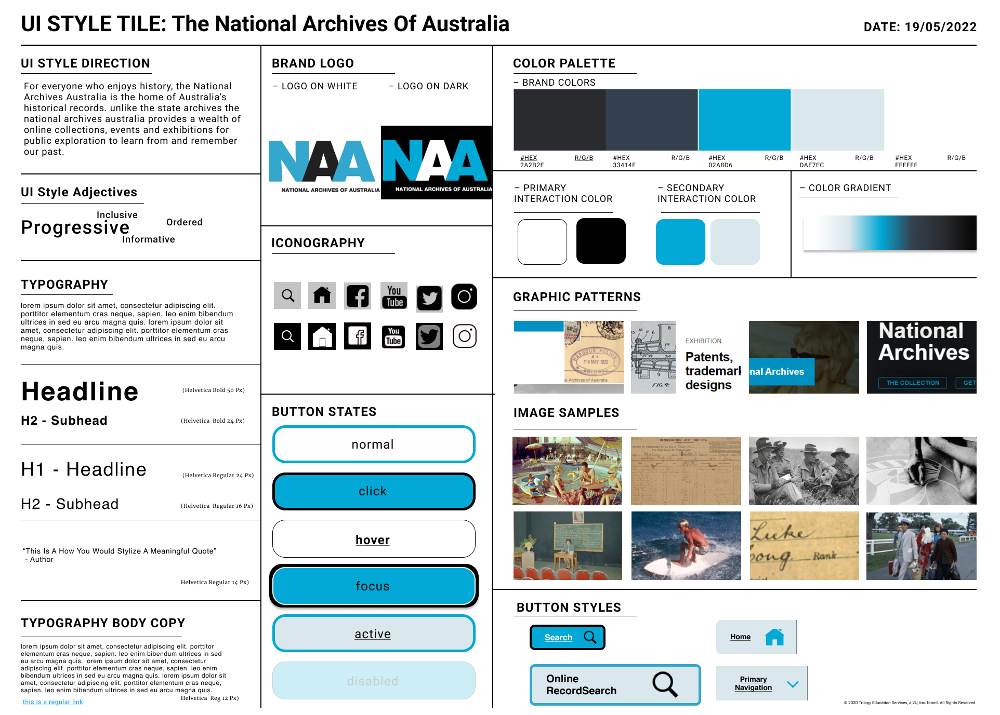
High Fidelity Wireframes - Desktop Homepage
Desktop and mobile high-fidelity prototypes were created to demonstrate the primary navigation bar in operation. Below is the Desktop high-fidelity wireframe. 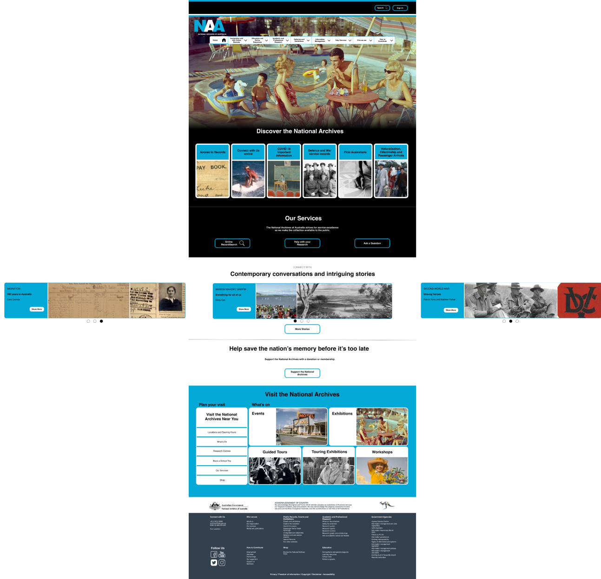
Responsive Resign
To complete the redesign, a responsive design layout was created for the mobile view to indicate the layout for front end development.
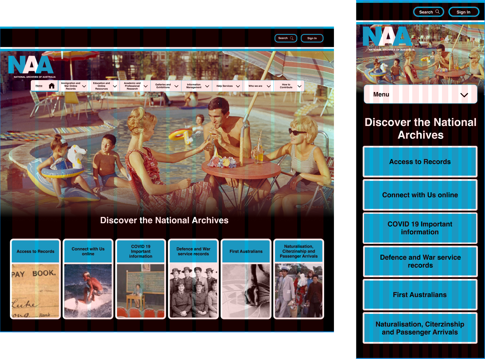Conclusion
The redesign of the information architecture and homepage proved to successfully improve the navigation experience of the user. The use of more direct language in the navigation bar also made it easier for the user to identify what might be in the secondary navigation.
What I learned from the experience was that whilst a website may initially look impressive, some of these impressive elements can actually be confusing to the user. This can result in a bad user experience, because the user can not understand how to interact with the design. Additionally, in some cases more navigation options with specific labels can be easier to navigate for the user, rather than fewer vague options trying to cover too many categories.
Next Steps
Further redesign opportunities were identified during the Usability Testing stage of this Case study. However, these were beyond the capability of the timeframe to be implemented.
- These areas to be addressed in the future include:
Thank you
Thank you for taking the time to review my work. More details can be found in the comprehensive case study slide deck linked below.